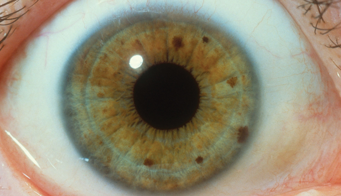
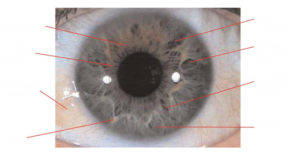
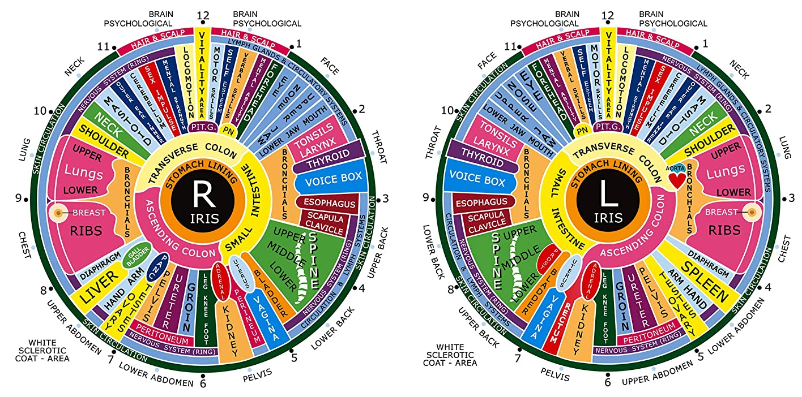

Índice
Iridologia: o que os olhos revelam sobre a saúde
Tudo começou em 1837 com um menino húngaro de 11 anos chamado Ignatz von Peczely, que tinha uma coruja de estimação. Como você sabe, as corujas têm olhos enormes e altamente visíveis. Quando a coruja quebrou a perna...
Uma marca preta apareceu que depois mudou de forma e cor até finalmente desaparecer, depois que a perna cicatrizou. A cura era visível na forma de uma linha branca.
O menino estava determinado atornar-se um médico. Ele se formou em 1867 e passou 13 anos observando as mudanças nos olhos de seus pacientes, antes de publicar seu gráfico de íris:
Como costuma acontecer com inovações revolucionárias, mais de uma pessoa estava fazendo a mesma descoberta simultaneamente: um garoto sueco de 14 anos chamado Nils Liljequist recebeu uma vacinação e adoeceu com gânglios linfáticos aumentados, tosse, malária, gripe e dor crônica. Ele notou como seus olhos azuis claros mudaram de cor, primeiro com a vacinação e depois com o tratamento de Iodo e Quinina.
Ao contrário de Ignatz, Nils não se tornou um médico alopata, pois tinha profunda desconfiança em relação à abordagem não holística, o que é bastante compreensível, pois quase foi morto por um médico quando era jovem. Portanto, ele se tornou um padre que usava a medicina naturopática, especificamente a eletrohomeopatia. Em 1893 Nils publicou um livro chamado
Diagnóstico do olho com 270 desenhos de como diferentes doenças correspondiam a diferentes formas e cores nos olhos. Nils e Ignatz desconheciam o trabalho um do outro, mas ainda
conclusões notavelmente semelhantes.
A propósito, essa história é muito focada no ocidente, supostamente a iridologia tem sido usada na China por pelo menos 3000 anos.
Quando você pesquisa no Google "iridologia" e termos relacionados, a primeira página é dominada por Wikipedia, Quackwatch, Medicina Baseada em Ciência, WebMD e assim por diante.. Todos eles têm uma coisa em comum: eles dizem que cada terapia alternativa não é comprovada, infundada e potencialmente prejudicial.Isso é natural nos dias de hoje, onde a saúde das pessoas é contada em dólares e centavos.
É bastante útil quando você está ciente dessa dinâmica: ao pesquisar uma terapia alternativa nos sites listados acima (e outros como eles), você estará lendo uma crítica montada profissionalmente de todos os aspectos da terapia e, em seguida, o segundo passo é ver o que as pessoas envolvidas com a terapia estão dizendo.
Nós vamos começar com o caso contra a iridologia.
Em primeiro lugar, o fato de haver mais de um punhado de gráficos de iridologia diferentes que não se alinham totalmente entre si, levanta ceticismo. Também torna o estudo da iridologia mais difícil porque, na melhor das hipóteses, você só pode refutar uma abordagem específica.
A maioria dos artigos negativos sobre iridologia gira em torno de um artigo publicado em janeiro de 2000 no Journal of the American Medical Association [1] onde eles revisaram todos os estudos científicos sobre iridologia. Eles encontraram 77 publicações e 17 deles foram considerados avaliações da eficácia da iridologia, e destes apenas 4 foram considerados bons o suficiente vale a pena olhar. Esses quatro estudos mostraram que:
->3 iridologistas não conseguiram identificar doença renal
->6 iridologistas não conseguiram identificar a doença da vesícula biliar
->1 iridologista não conseguiu identificar psoríase, asma, doença cardíaca e colite ulcerativa
->1 pesquisador que olhou para os olhos de 3 pessoas e disse que todos parecem iguais (risos)Todos eles têm uma coisa em comum:eles avaliam iridologistas, e não iridologia. Seria muito fácil conseguir um punhado de médicos como base para refutar a eficácia dos cuidados de saúde ocidentais. Além disso, também pode, na melhor das hipóteses, refutar apenas um aspecto singular da iridologia: uma doença ou enfermidade. Pelo mesmo raciocínio,toda doença incurável é a prova de que a medicina ocidental não funciona. Eu só vi um estudo em que eles aplicaram um design de experimento justo: em vez de procurar uma condição singular, eles tiraram fotos da íris de 57 pacientes e os compararam com suas revistas médicas [2] e encontraram uma ligação significativa entre seu diagnóstico alopático e de íris. Isso não diz muito sobre a precisão da iridologia, mas mostra que ela funciona em princípio.
Devemos também considerar que o diagnóstico da iridologia é diferente do da medicina ocidental, e em todos esses estudos este último é assumida como correta 100% do tempo. Por exemplo, no estudo da vesícula biliar mencionado acima, a "precisão" do diagnóstico alopático é que eles fizeram cirurgias de vesícula biliar pós-intervenção.
fala sobre lógica circular.
Desde 2000, muito mais estudos foram feitos, muitos com resultados positivos e alguns com resultados negativos: a iridologia parece notavelmente ruim no diagnóstico de câncer,mas eficaz no diagnóstico de muitas doenças que são reconhecidas na medicina ocidental. Por exemplo, uma meta revisão de estudos coreanos mostra que a iridologia é muito eficaz na identificação de fatores genéticos de saúde e seu tipo de personalidade [3] , também pode diagnosticar com precisão a perda auditiva [4] e a doença renal [5]. maior meta-revisão [6] que amostrou uma quantidade maior de estudos, um total geral de 25 estudosdas quais 15 foi a favor e 10 não eram a favor da iridologia.
Em suma, é claro que a iridologia não é completa o suficiente para substituir todas as outras ferramentas de diagnóstico. Também é claro que pode fornecer uma visão diagnóstica precisa e inovadora.
Mas o maior avanço não foi feito por iridologistas humanos... parece que esta é uma área que os humanos nunca irão realmente conquistar, já que as máquinas já parecem rodar em círculos ao nosso redor..!
Aprendizado de máquina
O grande avanço na iridologia são as massas de estudos recentes onde as redes neurais foram treinadas contra fotografias de íris (existem bibliotecas abertas) para diagnosticar diferentes condições de saúde com altíssima precisão. Aqui está uma lista incompleta do que a IA foi efetivamente treinada para diagnosticar:
->Alzheimer [7]
->Diabetes [8],[9]
->Dispepsia [10]
->Doença cardíaca [11]
->Colesterol alto [12]
->Doença hepática [13]
->Insuficiência Renal [14]Uma câmera de telefone comum tem qualidade suficiente para tirar fotos de íris (com algum treinamento... não é fácil, mas você pode fazer isso...) para que os AIs acima funcionem.
Isso é apenas uma questão de tempo antes de todos nós termos um aplicativo em nosso telefone que rastreia todos os aspectos de nossa saúde, personalidade e condicionamento físico por meio de uma foto diária da íris. Isso seria um valor muito melhor do que pagar pelo seguro de saúde! Isso nem é tão difícil de conseguir, considerando a eficácia dos AIs listados (role para baixo para ver os PDFs detalhando exatamente como eles funcionam), então, se você estiver lendo isso, considere tornar isso uma realidade.
Iridologia Veterinária
Quando se trata de humanos, pagaremos dinheiro para nos mantermos vivos, portanto, há dinheiro a ser ganho mantendo-nos constantemente doentes. Isto não é o caso da medicina animal!Isso significa que não há incentivos econômicos que impeçam práticas e terapias alternativas de saúde, de modo que a iridologia é difundida e aceita em muitos círculos veterinários. Parece surgir espontaneamente onde quer que tenhamos uma relação próxima com nossos animais: a iridologia equina é comumente praticada, os indonésios estão usando a iridologia para medir os níveis de estresse em peixes [15] e os brasileiros a usam em cabras [16]
Aprenda Iridologia
Enquanto estamos esperando por um aplicativo de iridologia baseado em IA,temos acesso aos mesmos gráficos e recursos que os iridologistas reais têm. Nada supera a experiência da vida real, é claro, mas acredito que o cuidado e a insegurança do novato são um ponto forte, considerando a incerteza da iridologiacomo método diagnóstico.
A maneira correta de usar a iridologia, na minha opinião, é ver o que sua íris implica sobre sua saúde sistêmica e tentar ver se faz sentido para você. Mais frequentemente do que não, ele faz.E então procure resolver esses problemas. Há muito a ganhar com esta abordagem. No entanto, não tome um diagnóstico de íris de um problema como uma verdade absoluta, é mais uma bandeira vermelha.
Quando você aprende a aplicar a iridologia básica, torna-se um presente que você pode aplicar a todos ao seu redor, o que pode ser muito benéfico. Amigos olham nos olhos um do outro!
O conceito básico é que as imperfeições na íris são vistas como descolorações e formas mais escuras. A inflamação e a cura são vistas como brancas, que geralmente cercam as partes escuras para mostrar a toxicidade e a cura em conjunto. Abaixo você pode ver um gráfico de íris moderno e comumente usado. Existe uma ferramenta online gratuita onde você pode fazer upload de uma foto do seu olho e sobrepor diferentes gráficos de iridologia sobre ela.
  Se você leva a sério o aprendizado de iridologia, clique no link abaixo e baixe um guia sobre.Baixe o Guia de Iridologia
Referências
- [1] JAMA "Debunk" of Iridology
- [2] Correlation Between Iridology & General Pathology
- [3] Meta-Review: Iridology & Genepolymorphism
- [4] Iridology Can Diagnose Hearing Loss
- [5] Iridology & Kidney Disease
- [6] Meta-Review: Iridology
- [7] Iridology AI & Alzheimers
- [8] Meta-Review: Iridology AI & Diabetes
- [9] Iridology AI & Diabetes
- [10] Iridology AI & Dyspepsia
- [11] Iridology AI & Heart Disease
- [12] Iridology AI & High Cholesterol
- [13] Iridology AI & Liver Disease
- [14] Iridology AI & Renal Failure
- [15] Fish Iridology
- [16] Goat Iridology
- [17] Free Online Iridology Software
- [18] Iridology Glossary